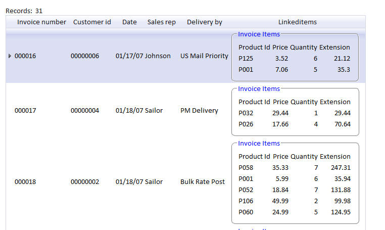
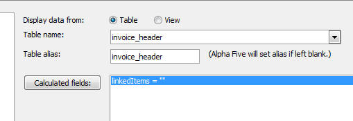

How to use Custom Controls in a Grid Component
This topic discusses an advanced use of a Custom Control in a Grid component.
The image below shows a grid based on the Invoice_header table from Alphasports. The last column on the Grid shows the line-items (from the Invoice_items table) for the current invoice.
This data in this column is a custom control.

Here is how this was achieved:
1. Create a dummy calculated field. Does not matter what the calculated field is called.
The image below shows how you can do this for .dbf tables.

In the case of SQL tables, you would create a custom SQL Select statement. For example:
SELECT invoice_number, customer_id, date, sales_rep, delivery_by, '' as LinkedItems from Invoice_header
2. Add the calculated field to the Grid and set its control type to the 'Custom'
3. In the 'Custom Control Definition' add this Xbasic:
function Linkeditems_render as c (data as p, args as p, PageVars as p)
with PageVars
on error goto Linkeditems_xbasicError
linkeditems_render = linkedRecords(Data.Invoice_number,"GlassBlue")
end
Linkeditems_xbasicError:
Linkeditems_render = "Error in custom control xbasic: " + error_text_get()
end with
end function
4. In the 'Xbasic function declarations' section, define the linkedRecords() function.
Here is a version of this function for the case where you are working with DBF files. An example for SQL tables follows below.
function linkedRecords as c (invNo as c, style as c )
dim tbl as p
tbl = table.open("PathAlias.ADB_Path\invoice_items")
dim itbl as p
itbl = tbl.query_create("","invoice_number = " + s_quote(invNo))
if itbl.records_get() = 0 then
linkedRecords = "No records found"
exit function
end if
dim htmlTemplate as c
htmlTemplate = <<%html%
%html%
htmlTemplate = stritran(htmlTemplate,"{grid.style}",style)
dim html as c = ""
while .not. tbl.fetch_eof()
*concat(html, evaluate_string(htmlTemplate) + crlf())
tbl.fetch_next()
end while
dim titles as c
titles = <<%html%
%html%
html = "
html = <<%html%
"
tbl.close()
linkedRecords = html
end function
Here is an example for SQL tables:
function linkedRecords as c (invNo as n, style as c )
dim cn as sql::connection
dim flag as l
flag = cn.open("::name::alphasports")
if flag = .f. then
linkedRecords = "Error opening connection"
exit function
end if
dim sql as c
sql = "select * from invoice_items where Invoice_number = :whatInvNo"
dim args as sql::arguments
args.add("whatInvNo",convert_type(invno,"N"))
flag = cn.Execute(sql,args)
if flag = .f. then
linkedRecords = "Error executing query"
exit function
end if
dim rs as sql::resultset
rs = cn.ResultSet
if rs.nextrow() = .f. then
linkedRecords = "No records found."
exit function
end if
dim htmlTemplate as c
htmlTemplate = <<%html%
%html%
htmlTemplate = stritran(htmlTemplate,"{grid.style}",style)
dim html as c = ""
dim flagRecordsFound as l = .t.
while flagRecordsFound
*concat(html, evaluate_string(htmlTemplate) + crlf())
flagRecordsFound = rs.nextrow()
end while
dim titles as c
titles = <<%html%
%html%
html = "
html = <<%html%
"
cn.FreeResult()
cn.close()
linkedRecords = html
end function